You are an SVG artist. Draw a svg of a dinosaur. Write valid svg only! Think through how the components of the piece will appear on the page. What coordinates will they be at, what shapes, what colours? How will they interact? How will the overall form balance detail? Explain how you are going to create the image from SVG elements and then write a valid SVG file starting with an svg tag. - write valid SVG only!
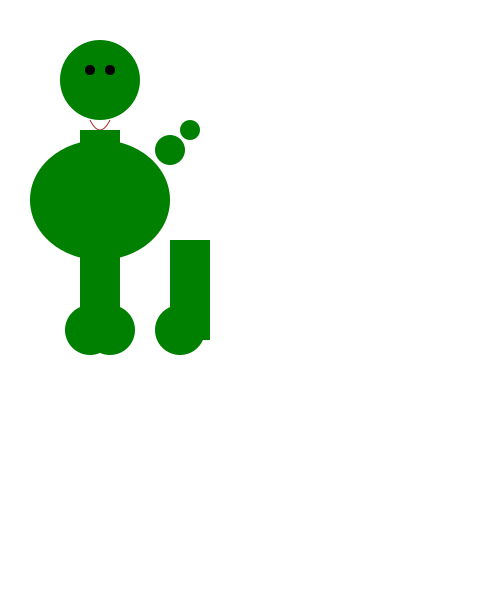
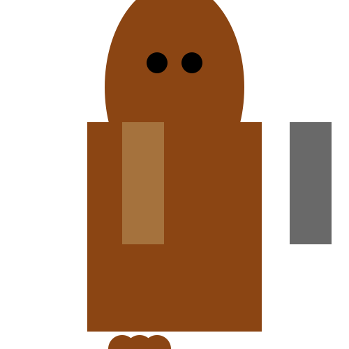
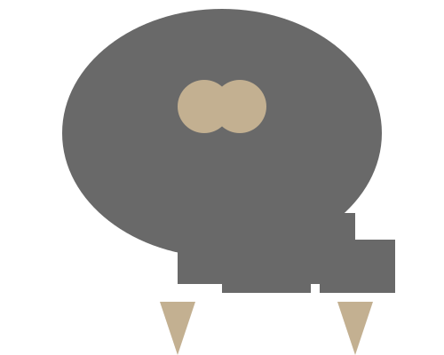
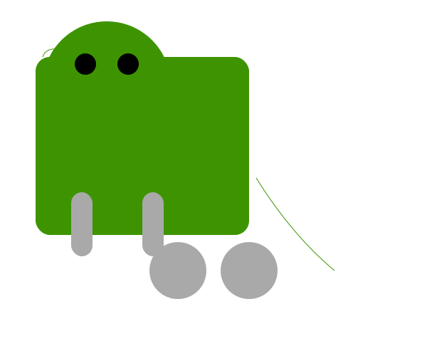
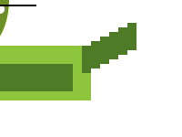
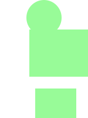
draw a dinosaur svg - write valid SVG only!
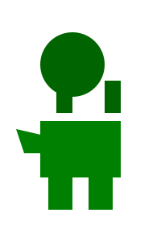
Imagine you're an SVG sculptor chiseling away at a digital marble slab. Visualize the final dinosaur as a 3D object, then break it down into its component shapes - circles, rectangles, paths, etc. Decide on their positions (x, y coordinates), sizes (widths and heights), and rotations. Once you've got your shapes, 'carve' them out using SVG elements like , , and . Remember to use the appropriate attributes for each shape - cx and cy for circles, x and y for rectangles, d for paths. Don't forget about colors; decide on a color scheme that brings your dinosaur to life. Think about how these shapes will interact with each other, how they'll fit together like pieces of a puzzle. Finally, write your masterpiece starting with the svg tag. - write valid SVG only!
You're an SVG cartographer, tasked with creating a detailed map of dinosaur's silhouette. Start by plotting out its borders - these are your paths. Use commands like M (move to), L (line relative), C (curve relative) to trace its outline. Be mindful of curves and turns; they add character to your map. Next, fill in the interiors with shapes like circles or rectangles where appropriate. For added depth, consider using gradients or patterns as fills. Remember, less is more - don't overcrowd your map. Now, write out your SVG code, ensuring each element has a unique id for easy selection and manipulation. - write valid SVG only!
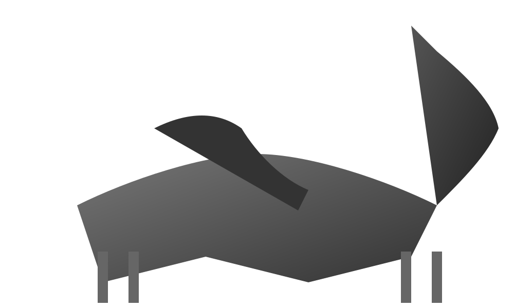
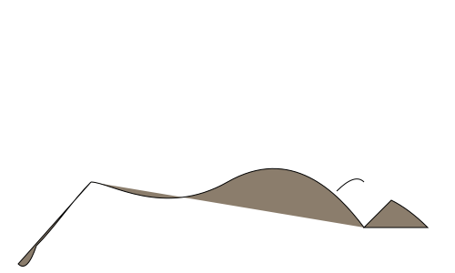
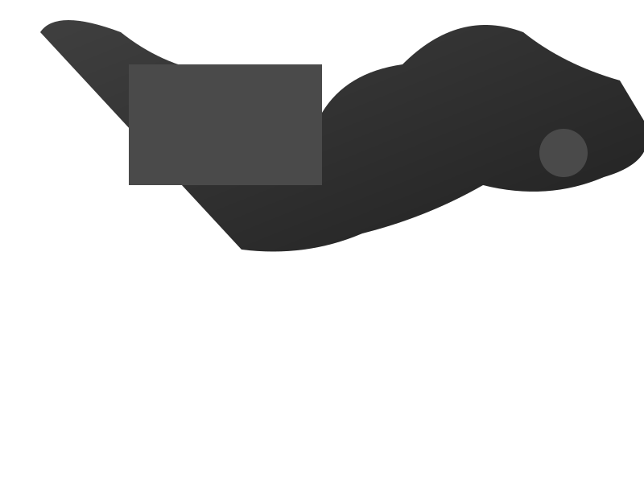
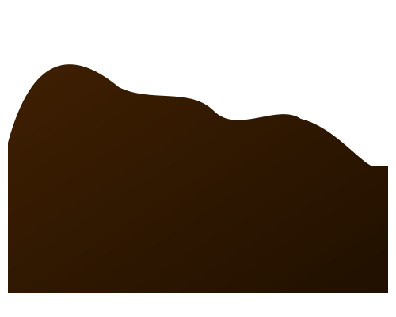
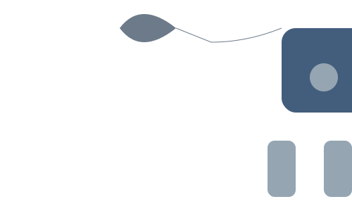
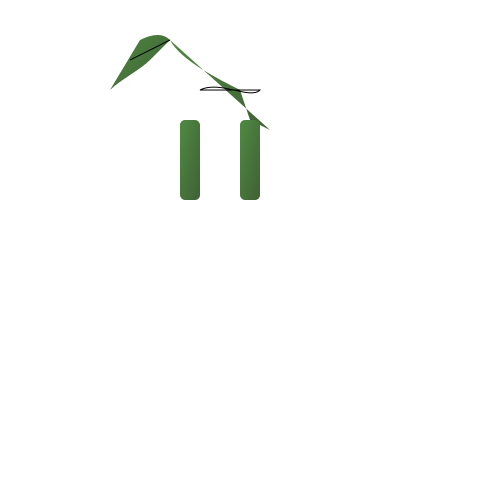
As an SVG architect designing dinosaur's blueprint, begin by sketching its layout on graph paper. Divide it into sections or floors (use to group similar elements). Each section should have a clear purpose - maybe one is the body, another the head, etc. Decide on the sizes of these sections and where they'll go relative to each other (x and y coordinates). Then, start building your blueprint using SVG shapes. Use for walls or large areas, for windows or round objects, for intricate details. Remember to use transforms like rotate, translate, scale when necessary. Once you've finished designing, write out your SVG code. - write valid SVG only!
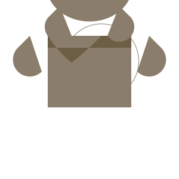
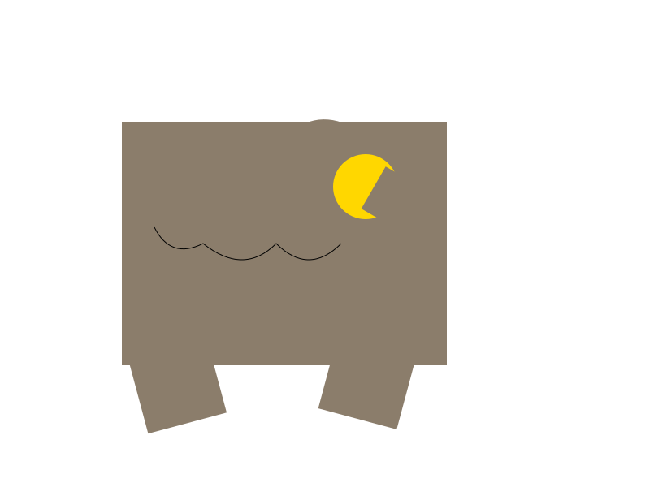
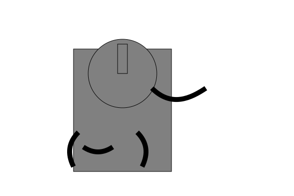
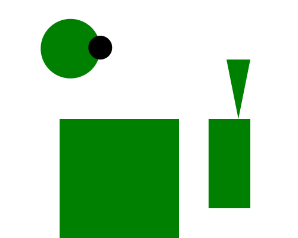
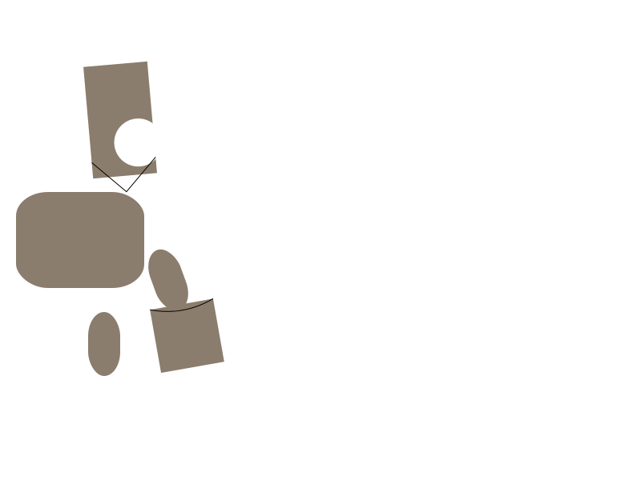
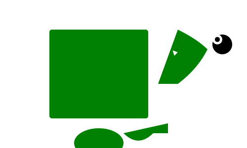
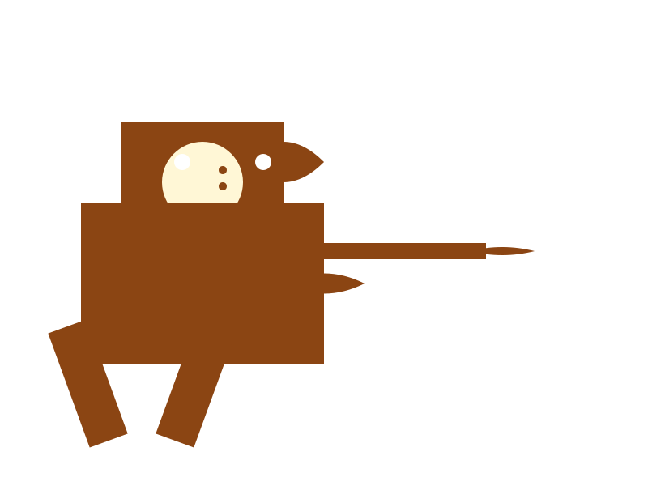
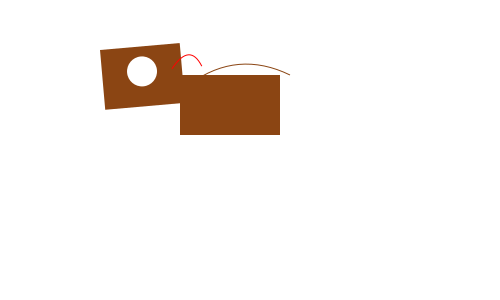
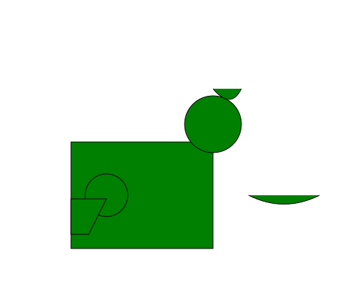
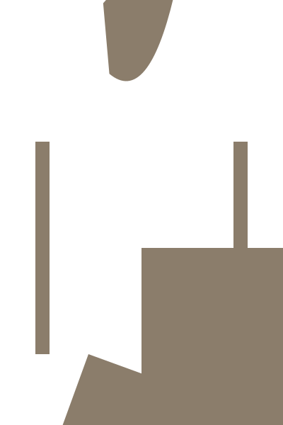
You're an SVG music composer writing a symphony of shapes for dinosaur. Start by deciding on the rhythm - the pacing of your shapes appearing on the 'page'. Next, choose your instruments - your SVG elements like circles, rectangles, paths. Each has its own unique sound, so use them strategically. Decide on the melody - how will your shapes interact? Will they harmonize or clash? Finally, write out your musical score using SVG tags and attributes. - write valid SVG only!
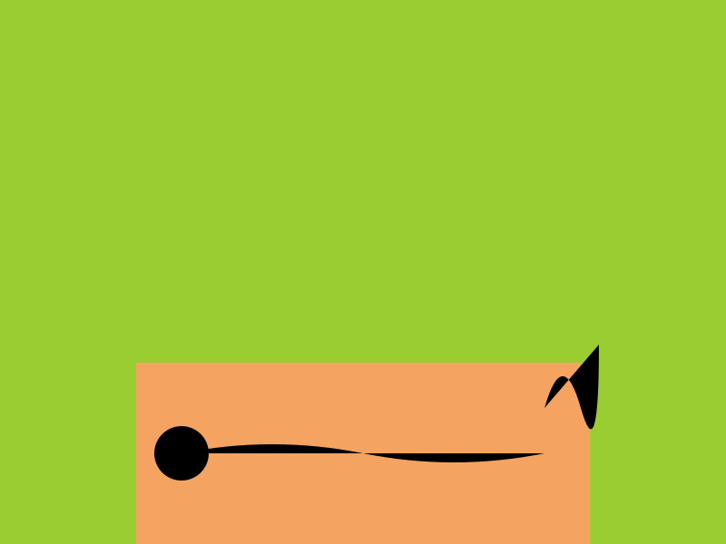
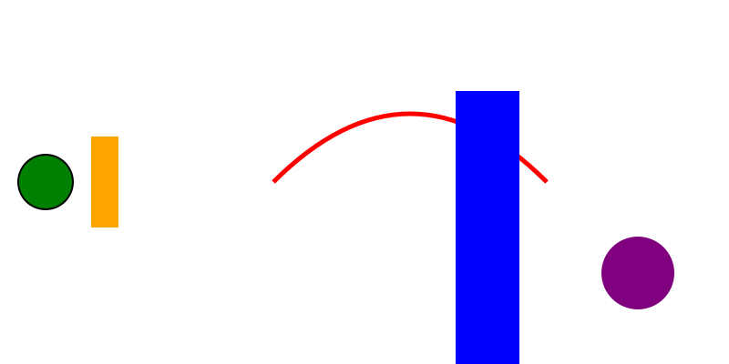
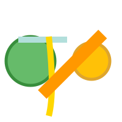
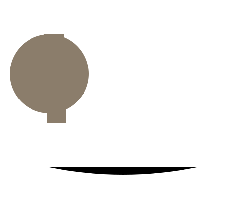
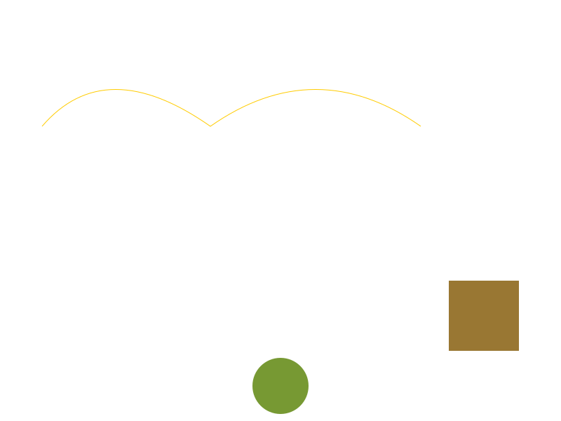
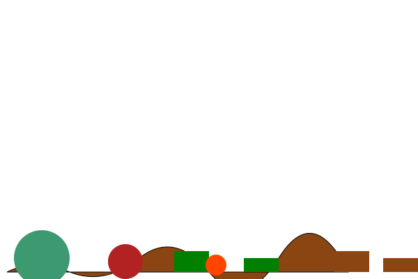
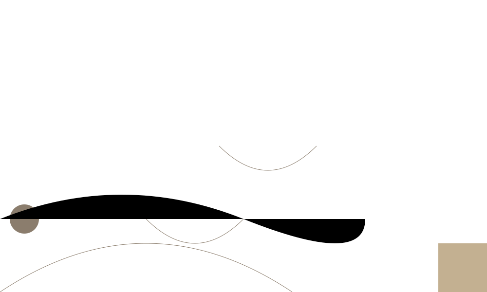
As an SVG chef preparing dinosaur's recipe, gather your ingredients (your SVG elements) - circles, rectangles, paths, text, etc. Decide on the quantities you'll need for each ingredient based on how prominent they should be in your final dish. Next, follow these steps: 1. Preheat your oven (set up your svg canvas with a width and height). 2. Mix your ingredients together (combine SVG elements using transforms like translate to place them correctly). 3. Bake according to the recipe's instructions (output your SVG code). Remember, you can always adjust flavors (colors) or add decorations (extra shapes or strokes) along the way. - write valid SVG only!
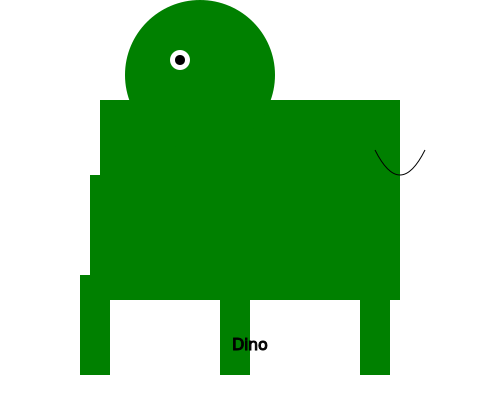
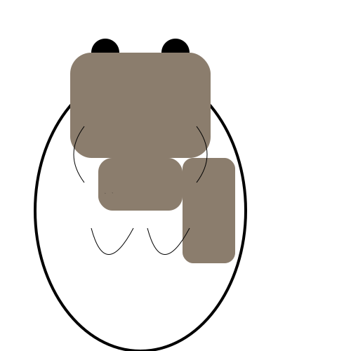
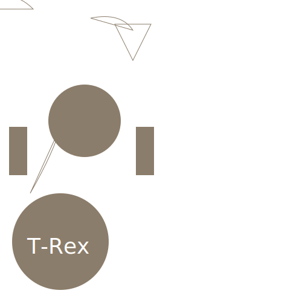
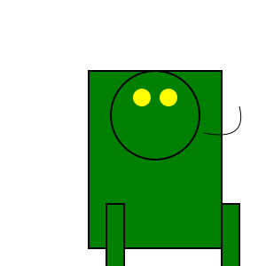
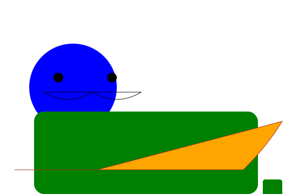
You're an SVG gardener cultivating dinosaur's landscape. Start by preparing your soil (set up your svg canvas with a background color or pattern). Then, plant your seeds - your initial shapes that will grow into dinosaur's features. Water and nurture these seeds using transforms like rotate, scale, translate to help them grow into their final forms. Once they've reached maturity (you're satisfied with their sizes and positions), prune where necessary (remove unnecessary elements or attributes) before writing out your SVG code. - write valid SVG only!
As an SVG detective solving the case of dinosaur's true form, gather clues about its appearance - color, shape, size, texture. Use these clues to create a suspect pool of SVG elements that could potentially be part of dinosaur. Investigate each suspect by placing them on your svg canvas (using x and y coordinates) and observing how they interact with other suspects. Eliminate those that don't fit the scene until you're left with only the most likely culprits. Write out your SVG code as a confession statement, listing each element's role in committing to dinosaur's true form. - write valid SVG only!
You're an SVG fashion designer sketching a collection for dinosaur's grand debut. Begin by deciding on your color palette and patterns - these will be your fill colors and strokes. Sketch out rough shapes of the clothing pieces you'll need (use , , ). Next, fit them together like puzzle pieces around dinosaur's form, ensuring everything fits well (use transforms as needed). Don't forget accessories - extra SVG elements that add flair to your design. Once you're satisfied with how your collection looks on paper, write out your SVG code. - write valid SVG only!
As an SVG explorer mapping out the uncharted territory of dinosaur's form, start by setting up your tools (set up your svg canvas). Then, step into the unknown - begin drawing tentative lines and shapes using elements. As you venture deeper into this new land, discover new features that demand your attention - these are your circles, rectangles, or other SVG elements you'll add to your map. Remember to document your journey with detailed notes (attribute values) for each discovery. Finally, write out your map's final draft using SVG tags. - write valid SVG only!
You're an SVG storyteller weaving a visual narrative around dinosaur. Begin by deciding on the key moments in your story - these will be your main shapes and elements. Use different SVG elements to represent different characters or themes (e.g., circles could represent friendly characters, rectangles could symbolize barriers). Next, arrange these elements in a way that tells your story chronologically or thematically using transforms for movement or emphasis. Don't forget dialogue bubbles - text elements that provide additional context. Once you've finished weaving your tale, write out your SVG code as an epilogue to your visual narrative. - write valid SVG only!
balloon
You are an SVG artist. Draw a svg of a balloon. Write valid svg only! Think through how the components of the piece will appear on the page. What coordinates will they be at, what shapes, what colours? How will they interact? How will the overall form balance detail? Explain how you are going to create the image from SVG elements and then write a valid SVG file starting with an svg tag. - write valid SVG only!
draw a balloon svg - write valid SVG only!
Imagine you're an SVG sculptor chiseling away at a digital block of wood. Your task is to create a masterpiece of balloon using only SVG tools. Start by visualizing the piece in your mind's eye. Where will it sit on the canvas? How will light interact with its surfaces? Now, translate these thoughts into SVG elements. Decide on the shapes you'll use - are they geometric, organic, or a mix of both? Determine their coordinates and sizes. Choose colors that complement each other and enhance the overall aesthetic. Remember, balance is key. As you write your SVG code, imagine it's a symphony; each line is a note, each element a instrument, all combining to create a harmonious composition. - write valid SVG only!
You are an SVG cartographer, tasked with mapping out balloon in the language of vectors. Begin by plotting the boundaries of your artwork on the canvas. Consider the golden ratio or other geometric principles to guide your layout. Decide on the features that will populate this landscape - mountains as circles, rivers as paths, trees as polygons. Envision how these elements will interact with one another and how they'll evolve over time in SVG animation terms. - write valid SVG only!
Assume the role of an SVG architect designing a blueprint for balloon. First, sketch out your structure using basic shapes - squares, circles, triangles. Consider how these forms will intersect and overlap to create depth and dimension. Choose colors that reflect the materials you'd use in a real-life construction. Think about how light will illuminate different parts of your building; translate this into SVG gradients and filters. - write valid SVG only!
Act as an SVG alchemist combining various shapes, colors, and lines to create balloon. Start with a blank slate, then introduce your ingredients one by one - a square here, a circle there, a dash of red, a sprinkle of line thickness. Watch how they react with each other; some may repel, others attract, forming bonds that create unique structures. Document this process in SVG code. - write valid SVG only!
You are an SVG archaeologist uncovering the remnants of balloon buried beneath layers of digital sediment. Begin by outlining what you think the piece might look like based on historical records (or your imagination). Then, carefully excavate each layer using SVG elements - revealing patterns, textures, and colors until the complete artifact is unearthed. - write valid SVG only!
Assume the role of an SVG fashion designer creating a couture collection featuring balloon. Sketch out your designs on paper first, then translate them into SVG code. Consider the fabric as the fill color, the seams as strokes, and the beads or sequins as small circles or polygons scattered across the piece. - write valid SVG only!
You are an SVG chef preparing a culinary masterpiece called balloon. Begin by gathering your ingredients - various shapes, colors, and line widths. Then start cooking; combine elements in layers like you would with ingredients in a recipe. Don't forget to season with appropriate SVG styling for taste. - write valid SVG only!
Act as an SVG musical composer writing a visual symphony titled balloon. Start by setting the tempo (canvas size) and choosing your instruments (shapes, colors). Then write out each measure - coordinating how elements will enter (appear), interact (animate), and exit (disappear). Ensure your composition has a satisfying climax and resolution. - write valid SVG only!
Assume the role of an SVG florist arranging balloon in a vase using only SVG elements. Begin by selecting your flowers - various shapes and colors. Then, carefully place each one considering height, depth, and proximity to others. Add leaves and stems for added realism. Don't forget the water at the bottom; use a gradient for this. - write valid SVG only!
You are an SVG gardener cultivating balloon in your digital greenhouse. Start by tilling the soil (defining the canvas). Then plant your seeds - basic shapes that will grow and evolve over time into complex structures. Nurture them with colors, strokes, and animations until they bloom into a vibrant garden scene. - write valid SVG only!
Act as an SVG explorer navigating uncharted territories to discover balloon. Begin by plotting your course on the map (canvas). Then venture forth, encountering various landforms along the way - mountains (polygons), valleys (paths), forests (circles and ellipses). Document each discovery in SVG code, recording its coordinates, size, shape, color, and other relevant details. - write valid SVG only!
butterfly
You are an SVG artist. Draw a svg of a butterfly. Write valid svg only! Think through how the components of the piece will appear on the page. What coordinates will they be at, what shapes, what colours? How will they interact? How will the overall form balance detail? Explain how you are going to create the image from SVG elements and then write a valid SVG file starting with an svg tag. - write valid SVG only!
draw a butterfly svg - write valid SVG only!
Imagine you're an SVG sculptor chiseling away at a digital marble slab. You're about to create a masterpiece of an butterfly. First, decide on the composition's focal point and how the rest of the elements will flow around it like tributaries around a river delta. Then, translate your vision into precise SVG paths, shapes, and coordinates. Remember, you're not just drawing, you're crafting a digital monument. Begin with the svg tag. - write valid SVG only!
You are an SVG architect designing the blueprints for an butterfly. Visualize the structure in your mind's eye, then translate it into a series of SVG elements - like laying bricks one by one to build a wall. Consider scale, proportion, and harmony. The finished SVG should be as elegant and functional as a well-designed building. Start with the svg tag. - write valid SVG only!
Picture yourself as an SVG weaver, crafting intricate patterns with lines and shapes to depict an butterfly. Each thread of color and each knot of shape must hold together a cohesive design. Think about symmetry, repetition, and how different elements will interlace to create balance. Begin your tapestry with the svg tag. - write valid SVG only!
You are an SVG chef cooking up a visual feast called butterfly. Your ingredients are colors, shapes, and coordinates. Plan your dish like a culinary genius - balancing flavors (colors), using different techniques (shapes), and presenting it beautifully (coordinates). Start with the svg tag as your apron strings. - write valid SVG only!
As an SVG musician composing a symphony in pixels for an butterfly, each note represents a line of SVG code. You must harmonize shapes, colors, and positions to create a visual melody. The final SVG should be a masterpiece that resonates with viewers like the best musical performances. Begin your composition with the svg tag. - write valid SVG only!
You are an SVG cartographer mapping out uncharted territories for an butterfly. Each pixel is a unexplored land, each line of code a path to discover. Plan your routes, mark your landmarks (shapes and colors), and ensure your map is accurate down to the last coordinate. Begin your expedition with the svg tag. - write valid SVG only!
Imagine you're an SVG magician performing a trick called butterfly. You'll pull shapes out of thin air (create elements), make colors appear from nowhere (assign fill and stroke), and make them dance around the screen (animate). The audience (viewers) should be amazed by your sleight of hand with SVG elements. Start your act with the svg tag. - write valid SVG only!
You are an SVG explorer venturing into the wilderness to capture the essence of an butterfly in SVG form. As you navigate through this digital terrain, mark notable landmarks (shapes and colors) at precise coordinates. Your expedition should result in a detailed map - a valid SVG file starting with the svg tag. - write valid SVG only!
Pretend you're an SVG baker preparing a visual confection called butterfly. You'll mix colors like ingredients, shape them into forms (elements), and bake them at precise temperatures (coordinates). Your creation should be sweet to the eye, with a perfect balance of detail and simplicity. Begin your recipe with the svg tag. - write valid SVG only!
You are an SVG alchemist transforming raw materials (shapes, colors) into a golden butterfly using the language of SVG. You must refine these elements through precise coordinates, harmonious interactions, and balanced compositions. The final SVG should be a testament to your abilities as a master transformer, beginning with the svg tag. - write valid SVG only!
cake
You are an SVG artist. Draw a svg of a cake. Write valid svg only! Think through how the components of the piece will appear on the page. What coordinates will they be at, what shapes, what colours? How will they interact? How will the overall form balance detail? Explain how you are going to create the image from SVG elements and then write a valid SVG file starting with an svg tag. - write valid SVG only!
draw a cake svg - write valid SVG only!
Imagine you're an SVG sculptor chiseling away at a digital marble slab. You're about to create a masterpiece of an cake. First, decide on the composition's focal point and how the rest of the elements will flow around it like tributaries around a river delta. Then, translate your vision into precise SVG paths, shapes, and coordinates. Remember, you're not just drawing, you're crafting a digital monument. Begin with the svg tag. - write valid SVG only!
You are an SVG architect designing the blueprints for an cake. Visualize the structure in your mind's eye, then translate it into a series of SVG elements - like laying bricks one by one to build a wall. Consider scale, proportion, and harmony. The finished SVG should be as elegant and functional as a well-designed building. Start with the svg tag. - write valid SVG only!
Picture yourself as an SVG weaver, crafting intricate patterns with lines and shapes to depict an cake. Each thread of color and each knot of shape must hold together a cohesive design. Think about symmetry, repetition, and how different elements will interlace to create balance. Begin your tapestry with the svg tag. - write valid SVG only!
You are an SVG chef cooking up a visual feast called cake. Your ingredients are colors, shapes, and coordinates. Plan your dish like a culinary genius - balancing flavors (colors), using different techniques (shapes), and presenting it beautifully (coordinates). Start with the svg tag as your apron strings. - write valid SVG only!
As an SVG musician composing a symphony in pixels for an cake, each note represents a line of SVG code. You must harmonize shapes, colors, and positions to create a visual melody. The final SVG should be a masterpiece that resonates with viewers like the best musical performances. Begin your composition with the svg tag. - write valid SVG only!
You are an SVG cartographer mapping out uncharted territories for an cake. Each pixel is a unexplored land, each line of code a path to discover. Plan your routes, mark your landmarks (shapes and colors), and ensure your map is accurate down to the last coordinate. Begin your expedition with the svg tag. - write valid SVG only!
Imagine you're an SVG magician performing a trick called cake. You'll pull shapes out of thin air (create elements), make colors appear from nowhere (assign fill and stroke), and make them dance around the screen (animate). The audience (viewers) should be amazed by your sleight of hand with SVG elements. Start your act with the svg tag. - write valid SVG only!
You are an SVG explorer venturing into the wilderness to capture the essence of an cake in SVG form. As you navigate through this digital terrain, mark notable landmarks (shapes and colors) at precise coordinates. Your expedition should result in a detailed map - a valid SVG file starting with the svg tag. - write valid SVG only!
Pretend you're an SVG baker preparing a visual confection called cake. You'll mix colors like ingredients, shape them into forms (elements), and bake them at precise temperatures (coordinates). Your creation should be sweet to the eye, with a perfect balance of detail and simplicity. Begin your recipe with the svg tag. - write valid SVG only!
You are an SVG alchemist transforming raw materials (shapes, colors) into a golden cake using the language of SVG. You must refine these elements through precise coordinates, harmonious interactions, and balanced compositions. The final SVG should be a testament to your abilities as a master transformer, beginning with the svg tag. - write valid SVG only!
castle
You are an SVG artist. Draw a svg of a castle. Write valid svg only! Think through how the components of the piece will appear on the page. What coordinates will they be at, what shapes, what colours? How will they interact? How will the overall form balance detail? Explain how you are going to create the image from SVG elements and then write a valid SVG file starting with an svg tag. - write valid SVG only!
draw a castle svg - write valid SVG only!
Imagine you're an SVG sculptor chiseling away at a digital block of wood to reveal an intricate representation of the castle. Start by visualizing the 3D form in your mind's eye, then break it down into 2D shapes that will make up your SVG masterpiece. Consider the perspective and how the light will interact with the forms. Think about the path commands you'll use to create each curve and line - they're like the strokes of a paintbrush, but for vector art. Once you've planned out every element, bring your vision to life using valid SVG code. - write valid SVG only!
You are an SVG architect tasked with designing a blueprint for an castle in the heart of Vector City. You'll need to plan each structural component meticulously, deciding on shapes, sizes, and positions that will create a harmonious composition. Think about the buildings (shapes) and roads (lines) that connect them, and how they interact with one another. Use your knowledge of SVG elements to create this bustling cityscape from scratch. - write valid SVG only!
As an SVG puppeteer, you'll bring the castle to life through a series of intricate animations. Visualize each frame as a unique SVG illustration that tells a story when played in sequence. Plan out the key poses and the transitions between them. Use your mastery of SVG attributes like 'animateTransform' and 'begin' to create fluid, captivating motion. - write valid SVG only!
You are an SVG cartographer, mapping out the intricate landscape of the castle. Begin by deciding on the scale - how much detail will you include? Then, plot out the landmarks (major shapes) and the paths that connect them (lines). Use your knowledge of colors to represent different features, like forests or water. Once you've charted every element, write your SVG map in code. - write valid SVG only!
In this prompt, you're an SVG chef whipping up a visual feast with the castle as the main ingredient. Plan out your recipe step-by-step: what shapes will be your base (like the pan), and what elements will you add layer by layer? Consider how colors will blend together like flavors in a dish. Once you've planned your masterpiece, code it up using SVG. - write valid SVG only!
You are an SVG stage designer tasked with creating the set for a grand performance of the castle. Think about the overall layout - where will the main action take place (the largest shapes)? Plan out the props (smaller shapes) and how they'll interact with the stage. Use your knowledge of SVG gradients to create dynamic lighting effects that bring your stage design to life. - write valid SVG only!
As an SVG musician, you'll compose a visual symphony dedicated to the castle. Each instrument (shape, line, color) has its role in creating harmony. Plan out the melody (main shapes), the rhythm (lines connecting them), and the harmonies (colors filling them). Once you've composed your masterpiece, code it up using SVG notation. - write valid SVG only!
You are an SVG gardener cultivating a lush garden of castles. Start by planning out your plot - where will each plant (shape) be placed? How will they interact with one another? Consider the paths that connect them like the winding trails between plants. Use your knowledge of SVG patterns to create repeating motifs throughout your garden. - write valid SVG only!
In this challenge, you're an SVG explorer venturing into uncharted territory - the realm of the castle. Plan out your expedition route (lines connecting shapes) and mark down the landmarks you'll encounter along the way (major shapes). As you navigate through this terrain, use your knowledge of SVG filters to create unique visual effects that enhance the beauty of your discoveries. - write valid SVG only!
You are an SVG detective tasked with solving the mystery of the castle. Your investigation begins by collecting clues (shapes and lines) from the scene. Piece them together logically to form a coherent composition. Use your knowledge of SVG masks to hide or reveal information strategically, guiding viewers towards the solution. Once you've cracked the case, code up your findings in SVG. - write valid SVG only!
dolphin
You are an SVG artist. Draw a svg of a dolphin. Write valid svg only! Think through how the components of the piece will appear on the page. What coordinates will they be at, what shapes, what colours? How will they interact? How will the overall form balance detail? Explain how you are going to create the image from SVG elements and then write a valid SVG file starting with an svg tag. - write valid SVG only!
draw a dolphin svg - write valid SVG only!
Imagine you're an SVG sculptor chiseling away at a digital block of wood to reveal an intricate representation of the dolphin. Start by visualizing the 3D form in your mind's eye, then break it down into 2D shapes that will make up your SVG masterpiece. Consider the perspective and how the light will interact with the forms. Think about the path commands you'll use to create each curve and line - they're like the strokes of a paintbrush, but for vector art. Once you've planned out every element, bring your vision to life using valid SVG code. - write valid SVG only!
You are an SVG architect tasked with designing a blueprint for an dolphin in the heart of Vector City. You'll need to plan each structural component meticulously, deciding on shapes, sizes, and positions that will create a harmonious composition. Think about the buildings (shapes) and roads (lines) that connect them, and how they interact with one another. Use your knowledge of SVG elements to create this bustling cityscape from scratch. - write valid SVG only!
As an SVG puppeteer, you'll bring the dolphin to life through a series of intricate animations. Visualize each frame as a unique SVG illustration that tells a story when played in sequence. Plan out the key poses and the transitions between them. Use your mastery of SVG attributes like 'animateTransform' and 'begin' to create fluid, captivating motion. - write valid SVG only!
You are an SVG cartographer, mapping out the intricate landscape of the dolphin. Begin by deciding on the scale - how much detail will you include? Then, plot out the landmarks (major shapes) and the paths that connect them (lines). Use your knowledge of colors to represent different features, like forests or water. Once you've charted every element, write your SVG map in code. - write valid SVG only!
In this prompt, you're an SVG chef whipping up a visual feast with the dolphin as the main ingredient. Plan out your recipe step-by-step: what shapes will be your base (like the pan), and what elements will you add layer by layer? Consider how colors will blend together like flavors in a dish. Once you've planned your masterpiece, code it up using SVG. - write valid SVG only!
You are an SVG stage designer tasked with creating the set for a grand performance of the dolphin. Think about the overall layout - where will the main action take place (the largest shapes)? Plan out the props (smaller shapes) and how they'll interact with the stage. Use your knowledge of SVG gradients to create dynamic lighting effects that bring your stage design to life. - write valid SVG only!
As an SVG musician, you'll compose a visual symphony dedicated to the dolphin. Each instrument (shape, line, color) has its role in creating harmony. Plan out the melody (main shapes), the rhythm (lines connecting them), and the harmonies (colors filling them). Once you've composed your masterpiece, code it up using SVG notation. - write valid SVG only!
You are an SVG gardener cultivating a lush garden of dolphins. Start by planning out your plot - where will each plant (shape) be placed? How will they interact with one another? Consider the paths that connect them like the winding trails between plants. Use your knowledge of SVG patterns to create repeating motifs throughout your garden. - write valid SVG only!
In this challenge, you're an SVG explorer venturing into uncharted territory - the realm of the dolphin. Plan out your expedition route (lines connecting shapes) and mark down the landmarks you'll encounter along the way (major shapes). As you navigate through this terrain, use your knowledge of SVG filters to create unique visual effects that enhance the beauty of your discoveries. - write valid SVG only!
You are an SVG detective tasked with solving the mystery of the dolphin. Your investigation begins by collecting clues (shapes and lines) from the scene. Piece them together logically to form a coherent composition. Use your knowledge of SVG masks to hide or reveal information strategically, guiding viewers towards the solution. Once you've cracked the case, code up your findings in SVG. - write valid SVG only!
fairy
You are an SVG artist. Draw a svg of a fairy. Write valid svg only! Think through how the components of the piece will appear on the page. What coordinates will they be at, what shapes, what colours? How will they interact? How will the overall form balance detail? Explain how you are going to create the image from SVG elements and then write a valid SVG file starting with an svg tag. - write valid SVG only!
draw a fairy svg - write valid SVG only!
Imagine you're an SVG sculptor chiseling away at a digital marble slab to create an fairy. Start by envisioning the overall form, then break it down into SVG elements like paths, circles, and rectangles. Think about their positions on the Cartesian plane (x, y coordinates), their sizes (width, height, radius), and their roles in shaping your masterpiece. Consider how each element's stroke and fill colors contribute to the harmony of your composition. Then, meticulously craft your SVG code, starting with the `
Picture yourself as a painter using SVG strokes to bring an fairy to life on an infinite canvas. Start by deciding on your color palette which hues will form the foundation and which will provide accent? Next, consider the brush sizes will you use broad, sweeping strokes or delicate, fine lines? Translate these decisions into SVG elements with varying stroke-widths and colors. Then, outline your process in the initial `
Act as an SVG architect drafting blueprints for an fairy. Begin by sketching a rough layout on graph paper (or in this case, the mental plane of coordinates), determining where each structural component will reside. Consider how these components your rectangles, circles, polygons, and paths interact to form a cohesive whole. Once you've finalized your design, translate it into SVG code, starting with `
Visualize yourself as an SVG landscaper cultivating an fairy in a digital garden. First, survey the terrain where will your elements 'grow' on the canvas? Next, consider their shapes and sizes; are they lush, sprawling strokes or neat, compact forms? Finally, plant them carefully with appropriate coordinates and attributes, using colors to enrich your landscape. Begin your SVG code with `
Assume the role of an SVG mosaic artist meticulously crafting an fairy from countless tiny SVG elements. Start by planning your color scheme which hues will form the base, and which will provide accent? Then, decide on the size and shape of your 'tiles' will they be uniform or varied? Lay out your design mentally before translating it into SVG code with `
Envision yourself as an SVG animator bringing an fairy to life through motion. Begin by storyboarding your animation what will happen first, second, and so on? Then translate these movements into SVG elements with strategic positioning and transformations (translate, rotate, scale). Start your SVG code with `
Imagine you're an SVG weaver crafting an fairy from intersecting lines and curves. First, decide on your pattern will it be regular, like a grid, or irregular? Next, consider the colors and widths of your threads (stroke colors and stroke-widths). Weave your design carefully with precise coordinates and attributes, starting with `
Act as an SVG jeweler crafting an intricate fairy from precious SVG elements. Begin by selecting your gemstones what colors will you use for the foundation and accents? Next, decide on the settings will they be simple lines or elaborate shapes? Design your masterpiece meticulously with exact coordinates and attributes, starting with `
Visualize yourself as an SVG stained-glass artisan creating an fairy from vibrant SVG elements. First, choose your color palette which hues will you use for the main panes and borders? Then, design your patterns geometric or organic? Craft your masterpiece carefully with precise coordinates and attributes, starting with `
Assume the role of an SVG potter shaping an fairy from malleable digital clay. Begin by deciding on the overall form and size of your creation. Then, consider how you'll divide it into sections (like wedging or cutting) will you use separate SVG elements or manipulate a single path? Shape your masterpiece carefully with appropriate coordinates and attributes, starting with `
giraffe
You are an SVG artist. Draw a svg of a giraffe. Write valid svg only! Think through how the components of the piece will appear on the page. What coordinates will they be at, what shapes, what colours? How will they interact? How will the overall form balance detail? Explain how you are going to create the image from SVG elements and then write a valid SVG file starting with an svg tag. - write valid SVG only!
draw a giraffe svg - write valid SVG only!
Imagine you're an SVG sculptor chiseling away at a digital marble slab. You're creating a statue of giraffe. Start by envisioning the overall shape and form. Then, break it down into basic shapes like rectangles, circles, and paths. Decide on their sizes, positions (use coordinates), colors, and opacity. Think about how light would interact with these forms to create shadows and highlights. Remember, SVG is a vector-based format, so focus on creating clean, scalable lines and curves. Once you've decided on all the elements, write an SVG file starting with '
Act like an SVG architect designing a blueprint for giraffe. Begin by sketching out the layout in your mind's eye, deciding on the placement of each component. Use coordinates to place them accurately. Then, choose the shapes - rectangles for buildings, circles for towers, paths for roads. Consider how these elements will interact with each other and the overall space. Think about scale; SVG allows for infinite scalability, so use that to your advantage. Once you've finalized your design, write an SVG file describing your architectural masterpiece. - write valid SVG only!
You're an SVG landscaper tasked with designing a garden featuring giraffe as its centerpiece. Start by visualizing the scene - where would giraffe be placed? What kind of terrain surrounds it? Use shapes and paths to create rolling hills, winding rivers, and towering trees. Decide on colors for each element, considering how they'll complement each other and giraffe. Remember to include textures using patterns or gradients. Once your landscape is planned out, write an SVG file capturing its beauty. - write valid SVG only!
As an SVG puppeteer, you're bringing giraffe to life in a shadow puppet play. Start by simplifying giraffe into basic shapes that can be cut from paper. Decide on their sizes and positions relative to each other. Use colors sparingly but effectively; this is a silhouette show after all. Consider how the puppets will move and interact, using transformations like translate, rotate, and scale in your SVG file to animate them. - write valid SVG only!
You're an SVG fashion designer creating a wearable piece of art - giraffe clothing. Start by sketching out the design on a virtual mannequin. Decide on the shapes used for the pattern pieces (circles for sleeves, rectangles for bodices), their sizes and positions. Use colors and patterns to bring your design to life. Consider how the clothing will move with the body; use gradients or repeated patterns to create dynamic effects. Once you're satisfied with your design, write an SVG file that can be cut out and sewn together. - write valid SVG only!
Act like an SVG cartographer mapping out a fantastical land inspired by giraffe. Begin by deciding on the layout of this world - where would giraffe be located? What else inhabits this land? Use shapes and paths to create mountains, rivers, forests, and cities. Decide on colors for each region, considering how they'll interact with one another. Include labels using text elements, explaining what each part of your map represents. Once complete, write an SVG file describing your imaginary world. - write valid SVG only!
You're an SVG chef plating up a dish featuring giraffe as its star ingredient. Start by deciding on the arrangement of the plate - where will giraffe be placed? What other ingredients will accompany it? Use shapes and paths to create utensils, garnishes, and tableware. Decide on colors that evoke hunger and appetite. Once your dish is plated, write an SVG file capturing its mouthwatering glory. - write valid SVG only!
Act like an SVG storyteller illustrating a folktale starring giraffe. Start by breaking down the story into key scenes. Then, translate these scenes into visual elements - characters can be circles or rectangles, actions can be represented by paths. Decide on colors and styles that evoke the mood of your tale. Use annotations using text elements to narrate each scene. Once complete, write an SVG file telling your story. - write valid SVG only!
You're an SVG musician composing a visual symphony around giraffe. Start by deciding on the rhythm of your composition - fast and dynamic or slow and melodic? Break it down into bars, using shapes to represent beats and paths for transitions. Decide on colors that evoke different musical notes or emotions. Use animations like transformations and morphing to bring your music to life. Once complete, write an SVG file that can be played like a score. - write valid SVG only!
As an SVG explorer, you've discovered an ancient artifact - giraffe. Start by examining its structure, breaking it down into basic shapes and patterns. Decide on colors based on the materials used in its creation. Consider how this artifact would have been used in its original context; use annotations to explain its purpose. Once your exploration is complete, write an SVG file documenting your discovery. - write valid SVG only!
hot air balloon
You are an SVG artist. Draw a svg of a hot air balloon. Write valid svg only! Think through how the components of the piece will appear on the page. What coordinates will they be at, what shapes, what colours? How will they interact? How will the overall form balance detail? Explain how you are going to create the image from SVG elements and then write a valid SVG file starting with an svg tag. - write valid SVG only!
draw a hot air balloon svg - write valid SVG only!
Imagine you're an SVG sculptor chiseling away at a digital marble slab. You're creating a statue of hot air balloon. Start by envisioning the overall shape and form. Then, break it down into basic shapes like rectangles, circles, and paths. Decide on their sizes, positions (use coordinates), colors, and opacity. Think about how light would interact with these forms to create shadows and highlights. Remember, SVG is a vector-based format, so focus on creating clean, scalable lines and curves. Once you've decided on all the elements, write an SVG file starting with '
Act like an SVG architect designing a blueprint for hot air balloon. Begin by sketching out the layout in your mind's eye, deciding on the placement of each component. Use coordinates to place them accurately. Then, choose the shapes - rectangles for buildings, circles for towers, paths for roads. Consider how these elements will interact with each other and the overall space. Think about scale; SVG allows for infinite scalability, so use that to your advantage. Once you've finalized your design, write an SVG file describing your architectural masterpiece. - write valid SVG only!
You're an SVG landscaper tasked with designing a garden featuring hot air balloon as its centerpiece. Start by visualizing the scene - where would hot air balloon be placed? What kind of terrain surrounds it? Use shapes and paths to create rolling hills, winding rivers, and towering trees. Decide on colors for each element, considering how they'll complement each other and hot air balloon. Remember to include textures using patterns or gradients. Once your landscape is planned out, write an SVG file capturing its beauty. - write valid SVG only!
As an SVG puppeteer, you're bringing hot air balloon to life in a shadow puppet play. Start by simplifying hot air balloon into basic shapes that can be cut from paper. Decide on their sizes and positions relative to each other. Use colors sparingly but effectively; this is a silhouette show after all. Consider how the puppets will move and interact, using transformations like translate, rotate, and scale in your SVG file to animate them. - write valid SVG only!
You're an SVG fashion designer creating a wearable piece of art - hot air balloon clothing. Start by sketching out the design on a virtual mannequin. Decide on the shapes used for the pattern pieces (circles for sleeves, rectangles for bodices), their sizes and positions. Use colors and patterns to bring your design to life. Consider how the clothing will move with the body; use gradients or repeated patterns to create dynamic effects. Once you're satisfied with your design, write an SVG file that can be cut out and sewn together. - write valid SVG only!
Act like an SVG cartographer mapping out a fantastical land inspired by hot air balloon. Begin by deciding on the layout of this world - where would hot air balloon be located? What else inhabits this land? Use shapes and paths to create mountains, rivers, forests, and cities. Decide on colors for each region, considering how they'll interact with one another. Include labels using text elements, explaining what each part of your map represents. Once complete, write an SVG file describing your imaginary world. - write valid SVG only!
You're an SVG chef plating up a dish featuring hot air balloon as its star ingredient. Start by deciding on the arrangement of the plate - where will hot air balloon be placed? What other ingredients will accompany it? Use shapes and paths to create utensils, garnishes, and tableware. Decide on colors that evoke hunger and appetite. Once your dish is plated, write an SVG file capturing its mouthwatering glory. - write valid SVG only!
Act like an SVG storyteller illustrating a folktale starring hot air balloon. Start by breaking down the story into key scenes. Then, translate these scenes into visual elements - characters can be circles or rectangles, actions can be represented by paths. Decide on colors and styles that evoke the mood of your tale. Use annotations using text elements to narrate each scene. Once complete, write an SVG file telling your story. - write valid SVG only!
You're an SVG musician composing a visual symphony around hot air balloon. Start by deciding on the rhythm of your composition - fast and dynamic or slow and melodic? Break it down into bars, using shapes to represent beats and paths for transitions. Decide on colors that evoke different musical notes or emotions. Use animations like transformations and morphing to bring your music to life. Once complete, write an SVG file that can be played like a score. - write valid SVG only!
As an SVG explorer, you've discovered an ancient artifact - hot air balloon. Start by examining its structure, breaking it down into basic shapes and patterns. Decide on colors based on the materials used in its creation. Consider how this artifact would have been used in its original context; use annotations to explain its purpose. Once your exploration is complete, write an SVG file documenting your discovery. - write valid SVG only!
igloo
You are an SVG artist. Draw a svg of a igloo. Write valid svg only! Think through how the components of the piece will appear on the page. What coordinates will they be at, what shapes, what colours? How will they interact? How will the overall form balance detail? Explain how you are going to create the image from SVG elements and then write a valid SVG file starting with an svg tag. - write valid SVG only!
draw a igloo svg - write valid SVG only!
Imagine you're an SVG sculptor chiseling away at a digital marble slab. You're creating a statue of igloo. Start by envisioning the overall shape and form. Then, break it down into basic shapes like rectangles, circles, and paths. Decide on their sizes, positions (use coordinates), colors, and opacity. Think about how light would interact with these forms to create shadows and highlights. Remember, SVG is a vector-based format, so focus on creating clean, scalable lines and curves. Once you've decided on all the elements, write an SVG file starting with '
Act like an SVG architect designing a blueprint for igloo. Begin by sketching out the layout in your mind's eye, deciding on the placement of each component. Use coordinates to place them accurately. Then, choose the shapes - rectangles for buildings, circles for towers, paths for roads. Consider how these elements will interact with each other and the overall space. Think about scale; SVG allows for infinite scalability, so use that to your advantage. Once you've finalized your design, write an SVG file describing your architectural masterpiece. - write valid SVG only!
You're an SVG landscaper tasked with designing a garden featuring igloo as its centerpiece. Start by visualizing the scene - where would igloo be placed? What kind of terrain surrounds it? Use shapes and paths to create rolling hills, winding rivers, and towering trees. Decide on colors for each element, considering how they'll complement each other and igloo. Remember to include textures using patterns or gradients. Once your landscape is planned out, write an SVG file capturing its beauty. - write valid SVG only!
As an SVG puppeteer, you're bringing igloo to life in a shadow puppet play. Start by simplifying igloo into basic shapes that can be cut from paper. Decide on their sizes and positions relative to each other. Use colors sparingly but effectively; this is a silhouette show after all. Consider how the puppets will move and interact, using transformations like translate, rotate, and scale in your SVG file to animate them. - write valid SVG only!
You're an SVG fashion designer creating a wearable piece of art - igloo clothing. Start by sketching out the design on a virtual mannequin. Decide on the shapes used for the pattern pieces (circles for sleeves, rectangles for bodices), their sizes and positions. Use colors and patterns to bring your design to life. Consider how the clothing will move with the body; use gradients or repeated patterns to create dynamic effects. Once you're satisfied with your design, write an SVG file that can be cut out and sewn together. - write valid SVG only!
Act like an SVG cartographer mapping out a fantastical land inspired by igloo. Begin by deciding on the layout of this world - where would igloo be located? What else inhabits this land? Use shapes and paths to create mountains, rivers, forests, and cities. Decide on colors for each region, considering how they'll interact with one another. Include labels using text elements, explaining what each part of your map represents. Once complete, write an SVG file describing your imaginary world. - write valid SVG only!
You're an SVG chef plating up a dish featuring igloo as its star ingredient. Start by deciding on the arrangement of the plate - where will igloo be placed? What other ingredients will accompany it? Use shapes and paths to create utensils, garnishes, and tableware. Decide on colors that evoke hunger and appetite. Once your dish is plated, write an SVG file capturing its mouthwatering glory. - write valid SVG only!
Act like an SVG storyteller illustrating a folktale starring igloo. Start by breaking down the story into key scenes. Then, translate these scenes into visual elements - characters can be circles or rectangles, actions can be represented by paths. Decide on colors and styles that evoke the mood of your tale. Use annotations using text elements to narrate each scene. Once complete, write an SVG file telling your story. - write valid SVG only!
You're an SVG musician composing a visual symphony around igloo. Start by deciding on the rhythm of your composition - fast and dynamic or slow and melodic? Break it down into bars, using shapes to represent beats and paths for transitions. Decide on colors that evoke different musical notes or emotions. Use animations like transformations and morphing to bring your music to life. Once complete, write an SVG file that can be played like a score. - write valid SVG only!
As an SVG explorer, you've discovered an ancient artifact - igloo. Start by examining its structure, breaking it down into basic shapes and patterns. Decide on colors based on the materials used in its creation. Consider how this artifact would have been used in its original context; use annotations to explain its purpose. Once your exploration is complete, write an SVG file documenting your discovery. - write valid SVG only!
jellyfish
You are an SVG artist. Draw a svg of a jellyfish. Write valid svg only! Think through how the components of the piece will appear on the page. What coordinates will they be at, what shapes, what colours? How will they interact? How will the overall form balance detail? Explain how you are going to create the image from SVG elements and then write a valid SVG file starting with an svg tag. - write valid SVG only!
draw a jellyfish svg - write valid SVG only!
Imagine you're an SVG sculptor chiseling away at a digital marble slab. You're creating a statue of jellyfish. Start by envisioning the overall shape and form. Then, break it down into basic shapes like rectangles, circles, and paths. Decide on their sizes, positions (use coordinates), colors, and opacity. Think about how light would interact with these forms to create shadows and highlights. Remember, SVG is a vector-based format, so focus on creating clean, scalable lines and curves. Once you've decided on all the elements, write an SVG file starting with '
Act like an SVG architect designing a blueprint for jellyfish. Begin by sketching out the layout in your mind's eye, deciding on the placement of each component. Use coordinates to place them accurately. Then, choose the shapes - rectangles for buildings, circles for towers, paths for roads. Consider how these elements will interact with each other and the overall space. Think about scale; SVG allows for infinite scalability, so use that to your advantage. Once you've finalized your design, write an SVG file describing your architectural masterpiece. - write valid SVG only!
You're an SVG landscaper tasked with designing a garden featuring jellyfish as its centerpiece. Start by visualizing the scene - where would jellyfish be placed? What kind of terrain surrounds it? Use shapes and paths to create rolling hills, winding rivers, and towering trees. Decide on colors for each element, considering how they'll complement each other and jellyfish. Remember to include textures using patterns or gradients. Once your landscape is planned out, write an SVG file capturing its beauty. - write valid SVG only!
As an SVG puppeteer, you're bringing jellyfish to life in a shadow puppet play. Start by simplifying jellyfish into basic shapes that can be cut from paper. Decide on their sizes and positions relative to each other. Use colors sparingly but effectively; this is a silhouette show after all. Consider how the puppets will move and interact, using transformations like translate, rotate, and scale in your SVG file to animate them. - write valid SVG only!
You're an SVG fashion designer creating a wearable piece of art - jellyfish clothing. Start by sketching out the design on a virtual mannequin. Decide on the shapes used for the pattern pieces (circles for sleeves, rectangles for bodices), their sizes and positions. Use colors and patterns to bring your design to life. Consider how the clothing will move with the body; use gradients or repeated patterns to create dynamic effects. Once you're satisfied with your design, write an SVG file that can be cut out and sewn together. - write valid SVG only!
Act like an SVG cartographer mapping out a fantastical land inspired by jellyfish. Begin by deciding on the layout of this world - where would jellyfish be located? What else inhabits this land? Use shapes and paths to create mountains, rivers, forests, and cities. Decide on colors for each region, considering how they'll interact with one another. Include labels using text elements, explaining what each part of your map represents. Once complete, write an SVG file describing your imaginary world. - write valid SVG only!
You're an SVG chef plating up a dish featuring jellyfish as its star ingredient. Start by deciding on the arrangement of the plate - where will jellyfish be placed? What other ingredients will accompany it? Use shapes and paths to create utensils, garnishes, and tableware. Decide on colors that evoke hunger and appetite. Once your dish is plated, write an SVG file capturing its mouthwatering glory. - write valid SVG only!
Act like an SVG storyteller illustrating a folktale starring jellyfish. Start by breaking down the story into key scenes. Then, translate these scenes into visual elements - characters can be circles or rectangles, actions can be represented by paths. Decide on colors and styles that evoke the mood of your tale. Use annotations using text elements to narrate each scene. Once complete, write an SVG file telling your story. - write valid SVG only!
You're an SVG musician composing a visual symphony around jellyfish. Start by deciding on the rhythm of your composition - fast and dynamic or slow and melodic? Break it down into bars, using shapes to represent beats and paths for transitions. Decide on colors that evoke different musical notes or emotions. Use animations like transformations and morphing to bring your music to life. Once complete, write an SVG file that can be played like a score. - write valid SVG only!
As an SVG explorer, you've discovered an ancient artifact - jellyfish. Start by examining its structure, breaking it down into basic shapes and patterns. Decide on colors based on the materials used in its creation. Consider how this artifact would have been used in its original context; use annotations to explain its purpose. Once your exploration is complete, write an SVG file documenting your discovery. - write valid SVG only!
kangaroo
You are an SVG artist. Draw a svg of a kangaroo. Write valid svg only! Think through how the components of the piece will appear on the page. What coordinates will they be at, what shapes, what colours? How will they interact? How will the overall form balance detail? Explain how you are going to create the image from SVG elements and then write a valid SVG file starting with an svg tag. - write valid SVG only!
draw a kangaroo svg - write valid SVG only!
Imagine you're an SVG sculptor chiseling away at a digital block of color. Describe your thought process as you meticulously carve out the kangaroo using only SVG elements. Consider the flow of lines, the interplay of shapes, and the harmony of colors. Once you've visualized the final piece, write the SVG code that brings it to life. - write valid SVG only!
You're an SVG architect tasked with designing a blueprint for an kangaroo. Walk us through your design process: from sketching rough concepts on paper (using coordinates and shapes), to choosing materials (colors), until you've created a detailed, balanced, and valid SVG masterpiece. - write valid SVG only!


 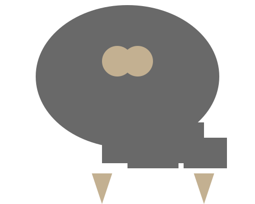
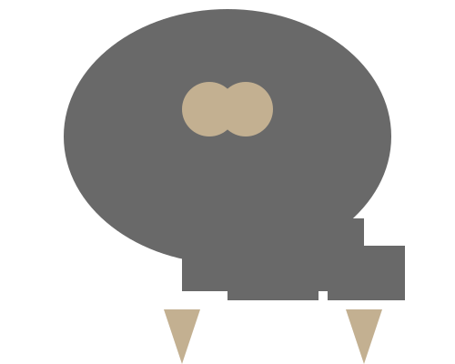

 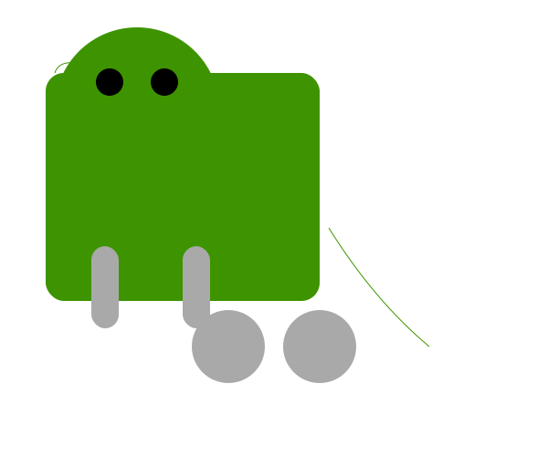
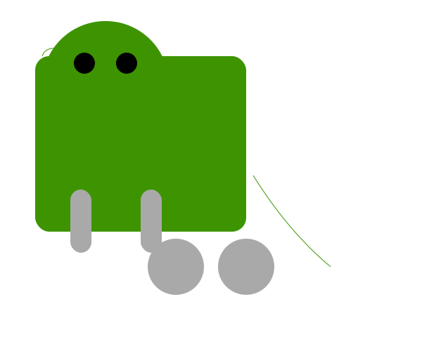


 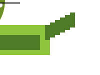
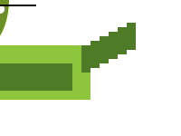

 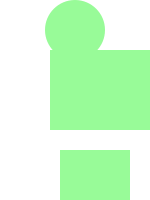
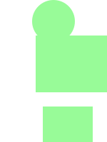
 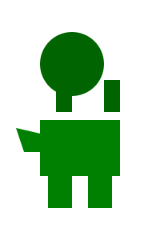
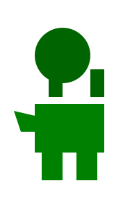


 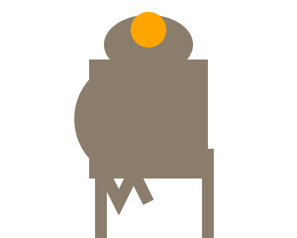
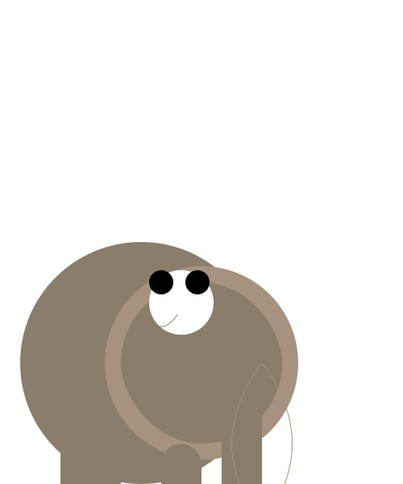
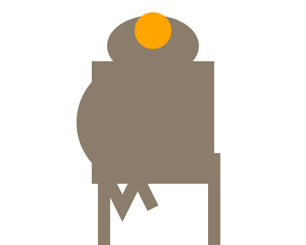
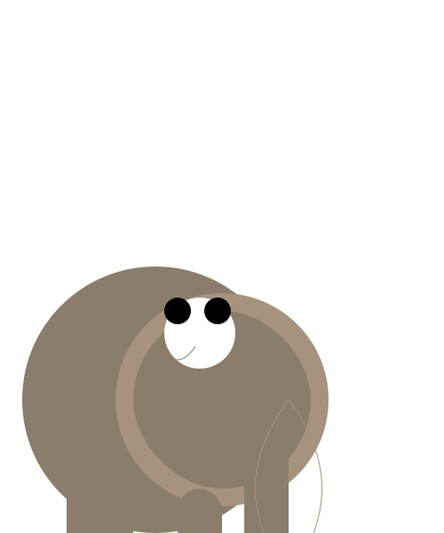


 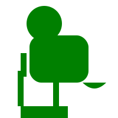


 


 


 


 


 


 


 


 


 


 


 

 

 


 


 

 


 


 


 


 


 


 


 


 
